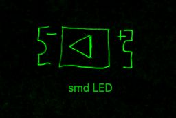
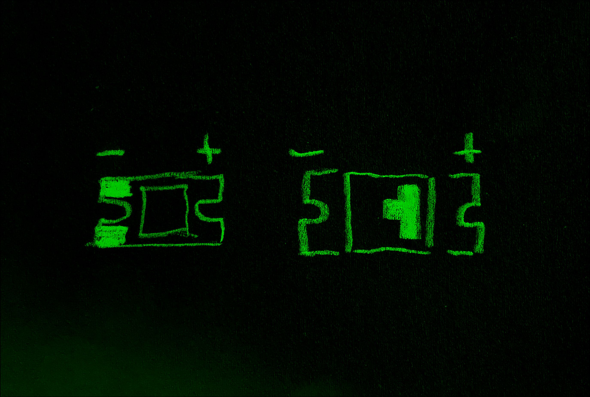
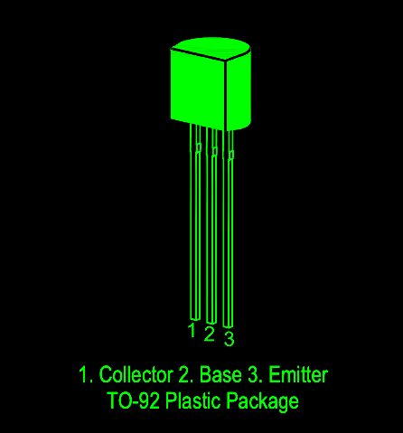
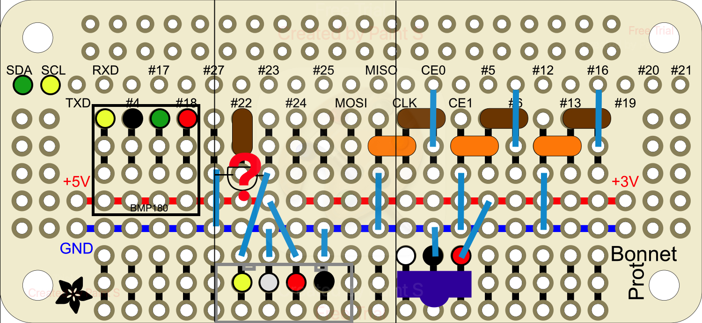
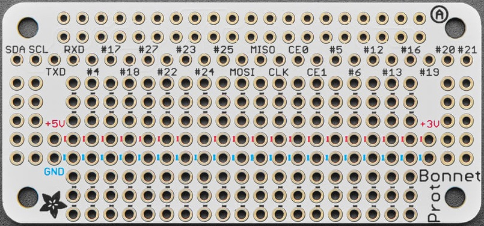
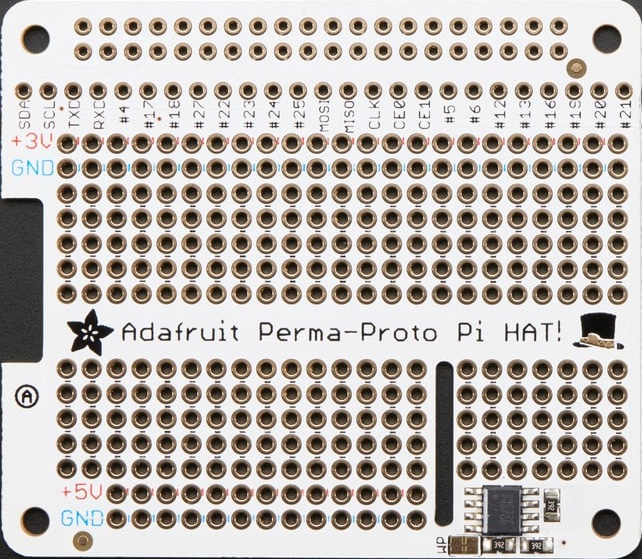
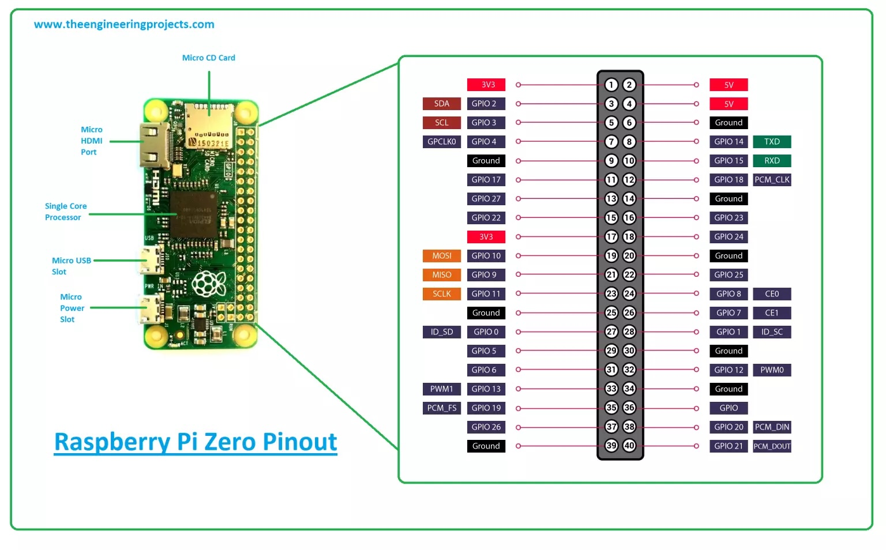

• 🟢 SDA → zelená
• 🟡 SCL → žlutá
• 🔴 VCC (3.3V / 5V) → červená
• ⚫ GND → černá
• 🔵 GPIO signál → modrá
• ⚪ GPIO signál (alternativa) → bílá
• 🟣 PWM / speciální funkce → fialová (volitelné)
TSOP4838 # IR přijímač
TSAL6100 infračervená LED
LITE ON LTE-5208AC infračervená LED
GPIO27 (pin 13)
│
│
[1kΩ] ← R1 (báze)
│
│
├───────┐
│ │
B│ C│
┌──┴──┐ │
│ NPN │ │ (např. BC547, 2N2222)
└──┬──┘ │
E│ │
│ │
GND │
│
→| │ TSAL6100
│
[100Ω] ← R2 (LED)
│
3.3V
Při pohledu na čidlo zepředu (čočka k tobě, nožičky dolů):
_______
| |
| TSOP |
|_______|
| | |
1 2 3
1 = OUT (výstup)
2 = GND (zem)
3 = VCC (napájení)
• Napájej 3.3 V, ne 5 V (GPIO by mohl být poškozen!)
• Výstup je digitální signál (LOW když přijímá IR)
• Doporučuje se přidat odrušovací kondenzátor:
• 100 nF mezi VCC a GND (co nejblíž čidlu)



zatím pouze dve smd led a dva předřadné odpory



